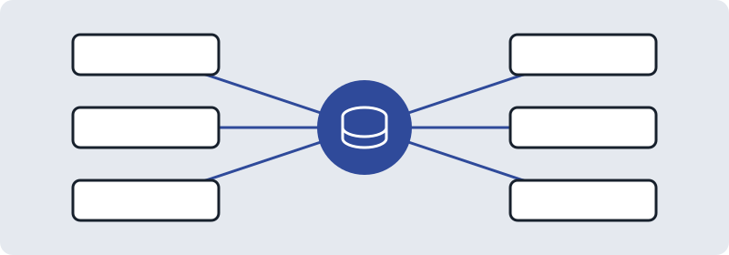

What is an ERP
An ERP (enterprise resource planning) system is integrated business software that brings the main parts of an organisation into one connected system.

What it covers
Instead of keeping separate spreadsheets and programs for each department, an ERP keeps the work in one place. Common areas include:
- Accounting: invoices, payments, bills and financial records.
- Inventory: stock, warehouses and stock movements.
- Sales: quotations, customer orders and customers.
- Purchasing: requests to suppliers and incoming goods.
- Human resources (HR): employee records, time off and recruitment.
Why organisations use one
- One source of truth: everyone works from the same data, so a sale can update stock and accounts without retyping.
- Fewer manual steps: information flows between departments instead of being copied by hand.
- Better visibility: managers can see orders, stock and finances together.
- Consistent processes: the same steps are followed each time.
Things to think about
An ERP touches many parts of a business, so choosing and setting one up takes planning: what processes you have, who will use it, and how existing data will move across.
Next: Odoo as an example ERP.